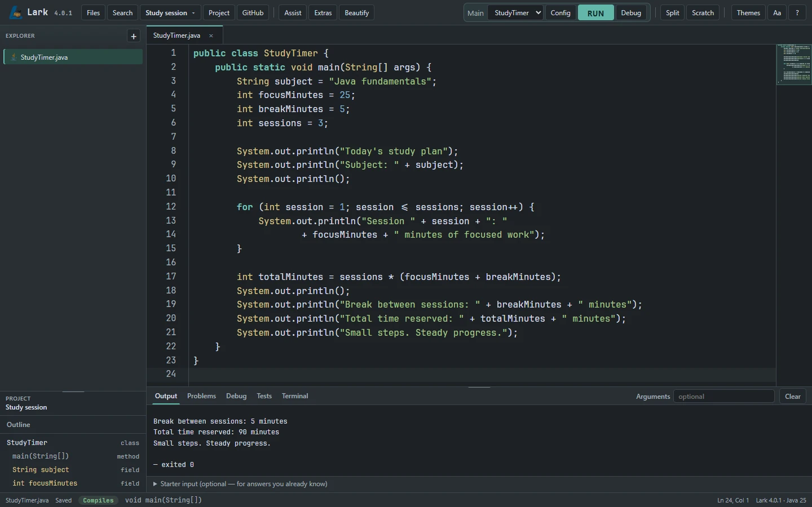
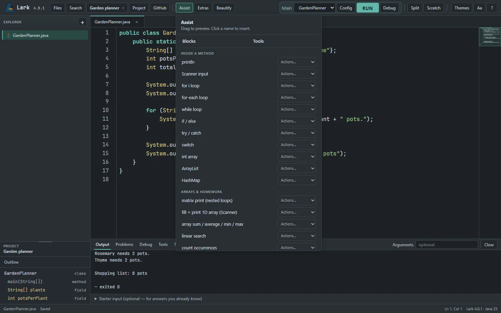
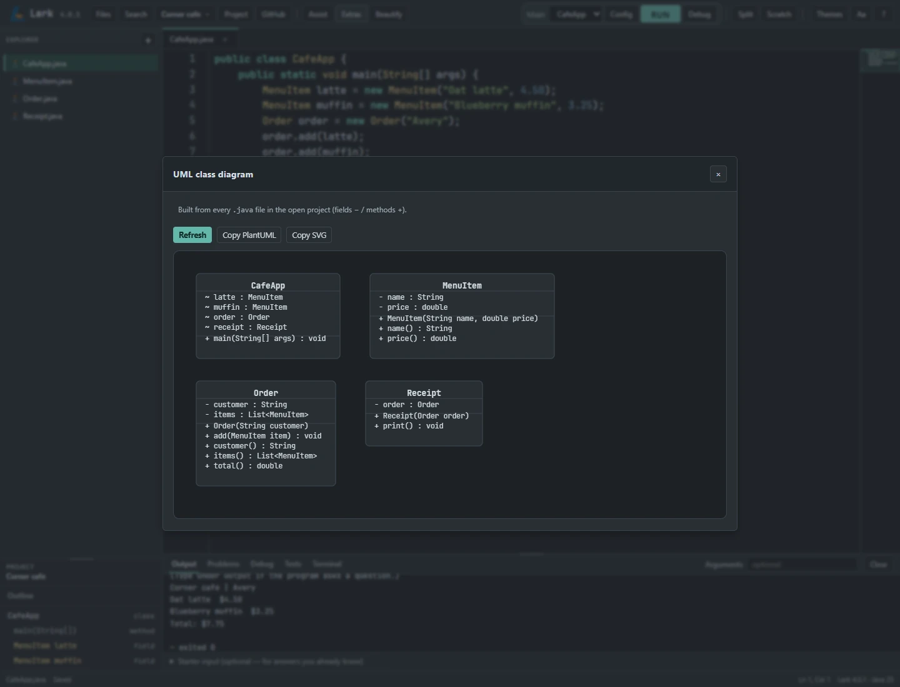
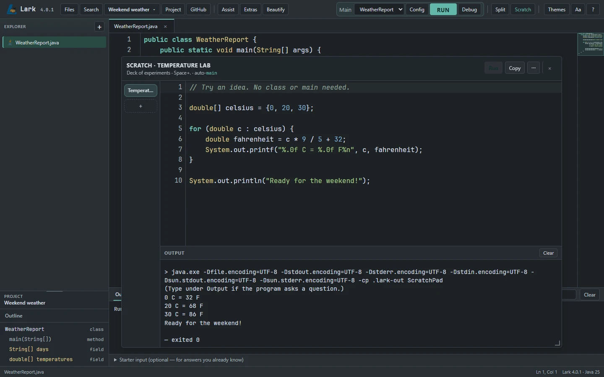
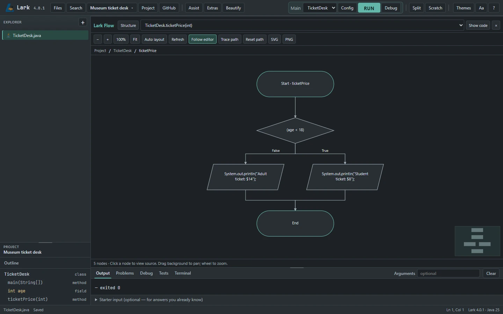

Write with a little help.
Java syntax highlighting, code completion, and practical code assistance keep your next step close at hand.
Free & open-source · Built for beginners
An entry-level Java IDE for students, first-time programmers, and small projects. Java comes included in the desktop downloads—install or extract Lark, open it, and start coding.
Java included · Free to use · Windows, macOS & Linux

A silent recording of the real Lark IDE. Java code is typed into StudyTimer.java, calculating focus sessions and breaks. Run compiles the program and displays the completed study plan in Output.
Focused by design
Practical development tools for learning Java, without an overwhelming interface.
Published downloads are resolved from GitHub Releases. Lark 4.0.5 is available with Share reliability fixes, improved Java editing and the new Mobile workspace.
Java syntax highlighting, code completion, and practical code assistance keep your next step close at hand.
Compile and run your project, set breakpoints, and explore variables with the built-in debugger.
Live compilation feedback and targeted quick fixes help you catch mistakes while the code is still fresh.
Project-wide search, a Code Structure panel, and the Command Palette help you move through your work.
Rename symbols, extract methods, and introduce variables with focused refactoring tools.
Create Java projects, manage files and folders, and keep related code together in the Explorer.
See the bigger picture
Learn one idea at a time. Try a snippet, see how classes connect, and understand what each decision does.
Explore Java snippets, preview where they fit, and insert them into your code. A practical companion when you’re learning a concept or trying a new approach.
Placement previews and single-step undo are included in the 4.0.1 update.

Generate a UML class diagram from your Java project. See fields, methods, and class relationships together, without leaving the IDE.
Open Extras → UML diagram in Lark Desktop.

03 / Scratch · Available now
Scratch is a separate Java pad for quick experiments. Test a calculation, practice a loop, or check a new idea while your project stays open.
Write a few Java statements and press Run. Lark adds the surrounding class and main method for simple snippets, so you can focus on the idea you’re learning.
Learn how to use Scratch →
Open Scratch from the toolbar. Start with a formula, a condition, or a small loop.
Run the snippet and read its own output. Change a value and run it again.
Name and revisit experiments in the Scratch deck. Copy useful code or promote it into a project class.
04 / Lark Flow Implemented in source
An if statement has two directions. A loop comes back around. Lark Flow makes those connections visible by turning a Java method into an interactive flowchart.
Follow a decision from start to finish, connect each diagram node to its source, and make sense of nested logic a step at a time.
Explore the Flow preview →
View one method’s logic, then move out to the relationships between methods and classes.
Select a decision branch to highlight a possible route. Trace Path explores logic; it does not execute the program.
Click a node to select its Java statement. Pan, zoom, and export the diagram as PNG or SVG.
Implemented. Lark Flow is present in the codebase. Unsupported Java constructs are identified in the workspace; consult your installed release notes for availability.
Your next Java project starts here
Plug-and-play for your first Java project. Choose a desktop package with Java already included.
Recommended · Windows x64
Setup installer · Published Windows installer · Java included
Published under release 4.0.5. Check its release notes before installing.
Download Windows installer ↓Release notes ↗Verified release information · October 31, 2026
The latest release is 4.0.5. Full installers and updates are available. Choose the package for your operating system.
A small first step
Choose your operating system. Install the Windows package or extract the ZIP. Java is bundled, so there is no separate JDK to set up.
Open Lark, choose New project, and give it a name. Start with a sample or create your own Java class.
Write your code, select a main class, and click Run. Your program’s output appears right below the editor.
Made in the open
Lark is developed openly. Explore the source code, report issues, and help improve the IDE.
Free to use, study, and modify under the MIT license.
Read the license ↗Browse releases ↗The people behind Lark
We’re a small team of students and developers building practical, open-source tools to make programming easier and more accessible.
Quality Assurance Engineer
Tests, reviews, and improves our software to make sure it works as expected and stays reliable.
Web Systems & Development
Builds and runs the web side of Lark, from the website to the systems behind it.
Founder
Leads product direction and software development, focused on making Lark easier to use and more accessible for students.
Product and Operations Manager
Coordinates development, manages projects, and keeps everything running smoothly.
Marketing and Community Director
Builds our presence, shares our progress, and helps grow the Lark community.